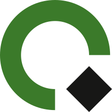
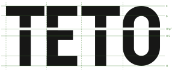

Base

A grotesca condensada limpa, já ajustada à grade. É a referência: mais próxima do letreiro original, menos exclusiva.
16 e 24 px
Rodada 2. Mantive a linha da Archivo, a grotesca condensada parecida com o letreiro original, e redesenhei as quatro letras na mesma grade áurea do símbolo. Fonte gratuita qualquer pessoa usa; o letreiro desenhado só a TETO tem.
Todos partem da mesma base: haste de H/φ³·⁵, T e O com largura H/φ, E com o braço do meio um pouco mais curto. O que muda é um detalhe só, sempre tirado do repertório da obra.

A grotesca condensada limpa, já ajustada à grade. É a referência: mais próxima do letreiro original, menos exclusiva.
As pontas dos braços são cortadas a 45°, como chapa de aço no maçarico. O ângulo é o mesmo do losango do símbolo.
Uma junta horizontal atravessa as quatro letras na seção áurea da altura, como a viga que corta a fachada da Casa T+J. Vira assinatura reconhecível até sem o símbolo.
A junta, mais o braço central do E terminando na ponta do losango. O símbolo aparece dentro da palavra, discreto.
Diagrama da variação Junta. As linhas verdes são as cotas; as tracejadas, o início de cada letra.

O letreiro é desenhado e não vira fonte. Para os títulos do site e dos impressos, três condensadas na mesma linha. Mona Sans e Hubot Sans são do GitHub, licença aberta OFL, com eixo de largura como a Archivo.
A arquitetura da felicidade
A atual. Neutra e segura, já testada no site. Personalidade baixa.
A arquitetura da felicidade
Grotesca de inspiração industrial, com curvas mais tensas e o “R” e o “A” mais firmes. Mais caráter que a Archivo sem perder a leitura.
A arquitetura da felicidade
Irmã técnica da Mona: curvas que viram quinas, como peça usinada. Combina com o corte a 45° da variação Viga.
Minha recomendação: letreiro Junta com títulos em Mona Sans.
A Junta é o detalhe mais forte e mais fácil de lembrar: uma linha que atravessa a palavra, como a viga atravessa a fachada. Funciona sozinha em placa de obra, carimbo e favicon de texto. A Mona Sans fica na mesma família visual da Archivo que você gostou, com mais tensão nas curvas. Se quiser um passo além em exclusividade, dá para unir Junta e Viga no mesmo letreiro.